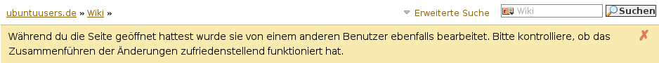
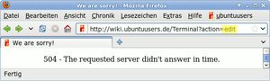
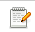

Wiki
Mitmachen
- Wikiartikel anlegen
- Howto anlegen
- Wiki-Referenz
- Wiki-Syntax
- Baustellen
- Artikelideen
- Ungetestete Artikel
- Ausbaufähige Artikel
- Fehlerhafte Artikel
- Rund ums Wiki
Konfiguration
- Backlinks anzeigen
- Exportieren
Benutzung
In diesem Artikel wird die Benutzung des Wikis mit Inyoka erklärt (Inyoka ist der Name der Software, die hinter dem Portal von ubuntuusers.de steckt).
Oberhalb von jeder Wiki-Seite findet man eine Leiste mit verschiedenen Reitern, welche die möglichen Aktionen bzw. Untermenüs darstellen. Die Bedeutung der einzelnen Reiter wird im Folgenden erklärt.
Ein weiterer Teil der Aktionen befinden sich in der Seitenleiste (ab Inyoka Version 0.12.0). Sollte die Seitenleiste nicht sichtbar sein, so kann diese durch einen Mausklick auf den orangen Pfeil links oben ausgeklappt werden.
Artikel¶
Klickt man auf diesen Reiter, so wird der Wiki-Artikel angezeigt. Kommt man auf eine Wiki-Seite, so ist dies die Standardansicht.
Bearbeiten¶
Der Name ist wohl eindeutig: Klickt man hierauf, so öffnet sich die Seite im Bearbeitungsmodus (falls man nicht angemeldet ist, wird man automatisch auf die Anmeldeseite weitergeleitet. Existiert noch kein Benutzerkonto, kann man sich eines anlegen). Bearbeitet man eine Seite, so sind die grundsätzlichen Regeln und die Syntax zu beachten!
Hinweis:
Wer umfangreichere Änderungen/Überarbeitungen vornehmen möchte, lässt sich den Artikel vom Wikiteam in die Baustelle schieben (siehe Bestehende Artikel überarbeiten). Bei Unklarheiten darüber, ab wann das nötig wird, bitte vorher in der Diskussion zum Artikels melden.
Bearbeitete Seiten müssen explizit gespeichert werden. Hat man etwas geändert und klickt dann auf einen anderen Reiter (wie z.B. "Artikel"), so sind alle Änderungen verloren! Zum Speichern einer Seite blättert man nach ganz unten und klickt auf "Absenden", wobei man vorher bitte im Textfeld "Änderungskommentar" einen kurzen Vermerk einträgt, was man geändert hat (z.B. "weitere Optionen hinzugefügt" oder "Abschnitt Bedienung aktualisiert"). Möchte man die Änderungen zuerst kontrollieren, z.B. ob das Layout stimmt, dann klickt man ganz unten auf "Vorschau". Die Vorschau kann man während des Editierens beliebig oft aufrufen. Will man Änderungen nicht speichern, so klickt man einfach auf "Abbrechen".
Hinweis:
Der Änderungskommentar ist sehr wichtig, daher bitte unbedingt eintragen! Dieser erscheint in der Versionsübersicht, so dass anhand der Notiz direkt sichtbar ist, was geändert wurde, ohne dass man zwei Artikelversionen erst aufwendig miteinander vergleichen muss.
Bearbeitungskonflikt¶

Ab und zu kann es zu einem Bearbeitungskonflikt kommen. Dies passiert dann, wenn Änderungen gespeichert werden sollen, nachdem ein anderer Benutzer den Artikel in der Zwischenzeit (meist unbemerkt im Hintergrund) ebenfalls bearbeitet und gespeichert hat. Man sieht die Seite wieder im Bearbeiten-Modus und folgenden Hinweis:
"Während du die Seite geöffnet hattest, wurde sie von einem anderen Benutzer ebenfalls bearbeitet. Bitte kontrolliere, ob das Zusammenführen der Änderungen zufriedenstellend funktioniert hat."
Unter Umständen muss man sich dann evtl. vorhandene "Konfliktmarkierungen" im Artikeltext anschauen.
Beispiel:
<<<<<<<<<<<<<<<<<<<<<<<<<<<<<<<<<<<<<<<< In diesem Artikel wird die Benutzung des Wikis mit Inyoka erklärt (Inyoka lautet der Name der Software, die hinter dem Portal von ubuntuusers.de steckt). ======================================== In diesem Artikel wird die Benutzung des Wikis mit Inyoka erklärt ([:Inyoka:] ist der Name der Software, die hinter dem Portal von ubuntuusers.de steckt). >>>>>>>>>>>>>>>>>>>>>>>>>>>>>>>>>>>>>>>>
Erläuterung:
<<<<<<<<<<<<<<<<<<<<<<<<<<<<<<<<<<<<<<<<
neuer oder geänderter Text========================================(Trennlinie)eigene Änderungen
>>>>>>>>>>>>>>>>>>>>>>>>>>>>>>>>>>>>>>>>
Wichtig ist in einer solchen Situation, den Artikel ohne Konfliktmarkierungen zu speichern. Daher müssen diese (inkl. des Textes) kontrolliert und anschließend entfernt werden. Dann wird der Artikel mit der Schaltfläche "Absenden" gespeichert.
Hinweis:
Konfliktmarkierungen entstehen nicht immer. Wenn unterschiedliche Teile des Artikels bearbeitet wurden, dann kümmert sich Inyoka selbständig um das Zusammenführen der Inhalte. Es ist (bei kleinsten Änderungen) auch möglich, die Bearbeitung abzubrechen und den Artikel anschließend ein zweites Mal zu bearbeiten. Das kann unter Umständen einfacher sein als das mühsame Suchen und Entfernen der Konfliktmarkierungen.
Serverfehler¶
|  |
| Serverfehler |
Beim Speichern eines Wiki-Artikels kommt es in seltenen Fällen vor, dass der Server eine Fehlerseite
"504 - the requested server didn't answer in time"
ausgibt. Angenommen, die Seite Terminal wurde bearbeitet, so lautete die Adresszeile:
http://wiki.ubuntuusers.de/Terminal/a/edit
Hier ersetzt man nun edit mit log, drückt
⏎ und gelangt damit zum Verlauf (siehe nächster Abschnitt). Nun wird ersichtlich, ob die Änderung übernommen wurde oder nicht. Wurde die Änderung übernommen, ist alles in Ordnung (bis auf den lästigen Hinweis). Wurde sie nicht übernommen, geht man im Browser zurück bis zur Seite im Bearbeitungs-Modus und schickt die Änderungen nochmal ab.
Falls Änderungen (und spontane Geistesblitze) unwiderruflich verloren gegangen sind, dann ist ein Blick in den Artikel Wiki/Hilfsmittel empfehlenswert.
Verlauf¶
Hier erhält man eine Versionsübersicht, d.h. die Historie des Artikels. Im einleitenden Text erhält man einige allgemeine Information (Anzahl der Revisionen, wer hat und wann wurde die letzte Änderung gemacht). Außerdem gibt es hier die Möglichkeit, sich per E-Mail oder per Atom-Feed über Änderungen informieren zu lassen.
Darunter wird tabellarisch der Revisionsverlauf des Artikels dargestellt, wobei die Tabelle absteigend sortiert ist. In den Spalten sieht man, wann die Änderung gemacht wurde ("Datum"), wer sie gemacht hat ("Benutzer") und was gemacht wurde ("Änderungskommentar").
In der vorletzten Spalte hat man die Möglichkeit, die Unterschiede zwischen zwei Versionen anzeigen zu lassen, wobei dies auch über mehrere Revisionen hinweg möglich ist. Dazu wählt man zwei (beliebige) Revisionen und klickt anschließend auf "Vergleichen". Die Unterschiede werden jetzt tabellarisch und farblich markiert angezeigt.
Möchte man sich gezielt eine (alte) Revision anzeigen lassen, so klickt man entweder
um die Seite im Rohtext gezeigt zu bekommen auf 
oder für die formatierte Ansicht auf
Diskussion¶
Ein sehr nützlicher Punkt, da hier direkt ins Forum verlinkt wird, und zwar auf den Thread, in dem der Wiki-Artikel diskutiert wurde. So wird sichergestellt, dass die komplette Diskussion zum Artikel in genau einem Thread stattfindet.
Ist der Punkt "Diskussion" ausgegraut, so gibt es noch keine Diskussion zu diesem Wiki-Artikel. Klickt man nun darauf, so wird automatisch ein neuer Thread im Wiki-Forum eröffnet. Findet man offensichtliche Fehler im Artikel oder hat Verständnisfragen zum Text, dann sollte man sein Anliegen ebenfalls im Diskussionsthread vorbringen.
Abonnieren / Abbestellen¶
Der Reiter "Abonnieren" bietet die Möglichkeit, sich über Änderungen im Artikel informieren zu lassen. Hat man eine Seite abonniert, so heißt der Reiter entsprechend "Abbestellen", über den das Abo gelöscht werden kann.
Damit man die E-Mails bekommt, muss im Kontrollzentrum unter "Profil" die E-Mail-Adresse hinterlegt sein. Möchte man lieber per XMPP (Jabber) informiert werden, so muss man Kontrollzentrum unter "Benutzereinstellungen" die Auswahl unter "Benachrichtigen per" auf "Jabber" stellen und natürlich unter "Profil" den eigenen XMPP-Account hinterlegen.
Backlinks¶
In der Seitenleiste befindet sich im Abschnitt "Konfiguration" der Menüpunkt "Backlinks anzeigen". Ein Klick darauf zeigt einer Liste der Wikiartikel an, in den ein Link auf den gerade aufgerufenen Wikiartikel gesettzt ist.
Anhänge verwalten¶
Außerdem gibt es hier über den Punkt "Anhänge verwalten" die Möglichkeit, dem Wiki-Artikel Dateianhänge hinzuzufügen bzw. zu verwalten. Dateianhänge können bis auf .deb-Pakete grundsätzlich alle Arten von Dateien sein, primär sind es aber Bilder, welche auf der entsprechenden Wikiseite verwendet werden.
Möchte man einem Wikiartikel ein Bild oder einen Anhang hinzufügen, so wählt man in der Seitenleiste im Abschnitt "Konfiguration" den Punkt "Anhänge verwalten". Es erscheint eine weitere Seite, über die die Verwaltung läuft.
Um einen neuen Anhang hinzuzufügen, klickt man auf die Schaltfläche "Durchsuchen" und es erscheint der bekannte Auswahldialog für Dateien. Möchte man die Datei direkt beim Hochladen umbenennen, so gibt man den neuen Namen in das Feld "Umbenennen auf" ein. Dabei ist darauf zu achten, dass die Dateiendung mit eingegeben wird! Im Feld "Beschreibung" kann man optional eine (kurze) Beschreibung des Anhangs hinzufügen. Ist der Dateianhang bereits vorhanden (z.B. weil man ein vorhandenes Bild aktualisiert), so setzt man den Haken in der Auswahlbox "Bestehenden Anhang gleichen Namens überschreiben", dann wird die alte Datei überschrieben. Ein Klick auf "Anhang hochladen" lädt die Datei schließlich hoch.
Hinweis:
Debian-Pakete (.deb) sind als Anhang im Wiki nicht gestattet!
Technisch gesehen sind Dateianhänge nichts anderes als eine Unterseite des bestehenden Wiki-Artikels. Welche Dateianhänge eine Seite bereits enthält sieht man unterhalb der Überschrift "Vorhandene Dateianhänge". Die Liste enthält alle Links auf die entsprechenden Unterseite. Klickt man auf einen solchen Link springt man auf die Unterseite. Grafiken werden direkt angezeigt, ebenfalls kann man hier den Kommentar sehen, so fern er beim Hochladen eingegeben wurde. Möchte man einen Anhang entfernen, bitte eine Nachricht im Diskussionsthread platzieren, da nur Teammitglieder die dazu benötigten Rechte haben.
Dateianhänge im Wiki-Artikel verwenden¶
Bilder, welche im Wiki-Artikel verwendet werden, werden per [[Bild()]] Makro eingebunden. Eine ausführliche Erklärung zur Syntax findet man Wiki/Bilder.
Andere Dateianhänge, wie z.B. zum Artikel zugehörige Skripte, kann man per [[Anhang(NAME)]] einbinden. Für NAME ist dann der Name des Dateianhangs einzusetzen.
Artikel exportieren¶
In der Seitenleiste im Abschnitt "Konfiguration" gibt es den Punkt "Exportieren". Als Exportformate stehen Rohtext (sehr praktisch, wenn man sich die Syntax bzw. "Rohstruktur" einer Seite anzeigen lassen möchte), HTML, Docbook und AST.
Neue Seite anlegen¶
Neue Seiten werden über die Seite Wiki/Wikiartikel anlegen erstellt. Diese Seite gibt auch Hilfestellung bei den ersten Schritten. Unten auf der Seite gibt man einfach im entsprechenden Feld den gewünschten Namen des Artikels ein und klickt auf "Seite erstellen".
Suchen¶
Natürlich bietet das Wiki auch eine Suchfunktion. Das Suchfeld befindet sich oberhalb der Reiter mit den Menüpunkten des Wikis. Zum Suchen gibt man einfach den gewünschten Suchbegriff ein und klickt auf "Suchen". Befindet man sich im Wiki, wird standardmäßig auch nur dort gesucht. Klickt man auf das Icon im Suchfeld, so kann man die Suche auch auf andere Teile von Inyoka (Forum, Ikhaya, Planet) ausdehnen. Genügt die einfach Suche nicht, so klickt man einfach auf "erweiterte Suche".
Rechte¶
Grundsätzlich kann jeder angemeldete Benutzer Seiten editieren, Anhänge anlegen und verwalten sowie neue Seiten anlegen. Nicht angemeldete Benutzer können "nur" lesen und ansonsten keine weiteren Aktionen durchführen.
Manche Seiten, wie z.B. einige Übersichtsseiten, sind allerdings schreibgeschützt und können nur vom Wikiteam sowie Mitgliedern aus dem ubuntuusers-Team bearbeitet werden. Bei solchen Seiten ist der "Bearbeiten" Reiter direkt ausgeblendet. Das Verschieben, Löschen oder Umbenennen von Seiten ist ebenfalls nur Mitgliedern des Wikiteams möglich.
Diese Revision wurde am 30. November 2015 10:58 von aasche erstellt.
- Erstellt mit Inyoka
-
 2004 – 2017 ubuntuusers.de • Einige Rechte vorbehalten
2004 – 2017 ubuntuusers.de • Einige Rechte vorbehalten
Lizenz • Kontakt • Datenschutz • Impressum • Serverstatus -
Serverhousing gespendet von